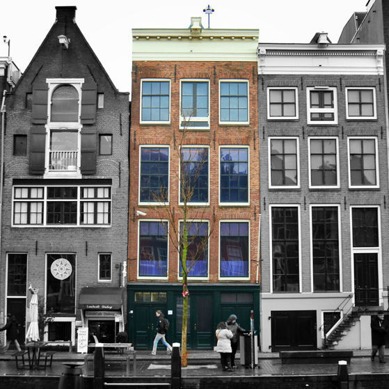

DESTINATIONS ↣ EUROPE
COUNTRIES VISITED
(13/44)
Europe has always been my family's go-to travel destination. I'm forever grateful to my parents for bringing my brother and I along on their wordly travels from a young age and instilling in us a passion for European culture as deep as theirs. Traveling in Europe accomodates the best of both worlds in terms of those looking to splurge on a luxurious trip, as well as those looking to travel on a budget. There is deep-rooted history all around you in Europe, buried in the art, architecture, and even in the streets, telling fascinating stories about the past and leaving you feeling a sense of enlightenment. Not to mention, I've had, without a doubt, the best meals of my life in Europe. You're guaranteed to leave with a happy soul and happy stomach. Below, I've written about a few of my favorite European cities, including must-try foods, itineraries, and travel tips.
CÔTE D'AZUR, FRANCE

The Côte d'Azur (or French Riviera) will always hold a special place in my heart as the only place I have ever lived outside of the United States. I spent a semester abroad in a quaint coastal town just on the outskirts of Nice called Antibes. I had been studying French for 10 years prior, and I felt that the best way to achieve true fluency in the language would be to immerse myself directly in a small town of the native-speaking country. During my short-lived time there (thanks to COVID-19), I accomplished my goal of strengthening my conversational French skills while creating lasting friendships and making memories of a lifetime.
A List of Must-Dos for My Favorite Stops in the French Riviera
NICE
- Take a stroll along the Promenade des Anglais
- Discover authentic restaurants and shops in Old Town
- Visit the Museum of Modern and Contemporary Art
- See the fun architecture of St. Nicholas Russian Orthodox Cathedral
- Ride the ferris wheel in Place Masséna (main square)
- Relax on Beau Rivage beach
ANTIBES
- Go on a hike along the Cap d'Antibes
- Marvel at the art collection at the Picasso Museum
- Try fresh produce and authentic cheeses from the Marché provençal (local farmer's market)
- Pick up a sandwich from a local boulangerie (bakery) on your way to La Gravette Beach
- Take a photo in front of The Nomad sculture
- Treat yourself to a lavish dinner at Le Figuier de Saint-Esprit (awarded a Michelin star!)
CANNES
- Walk along the flashy Boulevard de la Croisette lined with upscale shops and hotels
- Attend a movie showing at the Cannes Film Festival (if you're lucky!)
- Visit the Notre-Dame de l'Espérance (church)
- Watch the yachts and boats dock in Le Vieux Port (Old Port)
- Admire the Painted Walls of Cannes
- Grab a bite to eat from Marché Forville– another local farmer's market
Eat and Drink Your Way Through the French Riviera!
- FAVORITE CAFES:
- ☕ Choopy's Cupcakes & Cofee-shop (Antibes)
- ☕ Le Clemenceau (Antibes)
- ☕ Emilie and the Cool Kids (multiple locations)
- ☕ Le Perko (Antibes)
- ☕ Healthy Lounge (Antibes)
- FAVORITE BAKERIES:
- 🥐 Aux Delices Antibois (Antibes)
- 🥐 Au Palais de la Friandise (Antibes)
- 🥐 Boulangerie L'Epi d'Or (Antibes)
- 🥐 PAUL (multiple locations)
- FAVORITE DINNER SPOTS:
- 🍴 Le Vauban (French - Antibes)
- 🍴 Le Figuier De Saint Esprit (French - Antibes)
- 🍴 La Trattoria (Italian - Antibes)
- 🍴 Le Kashmir (Indian - Antibes
- 🍴 Le Séjour (French - Nice)
- 🍴 Les Garçons (French - Nice)
** Be sure to try the gelato! Any roadside stand is guaranteed to be good **
BUDAPEST, HUNGARY

Budapest, Hungary is one of the few places I've been fortunate enough to travel to twice in my life. I first discovered the beautiful city in 2015 when I took a family trip there in the summertime. The second time was about 5 years later during my study abroad experience in the wintertime, which showed me a completely different side of the city. It was as if I was visiting for the first time all over again. Budapest is famous for its long-standing history, mesmerizing architecture, natural hot springs, and dyanimc night-life– all for a cheap price! The locals are all friendly and welcoming, especially in comparison to those in other European countries.
3-Day Itinerary
I stayed in a hostel located on the Pest side of the Danube River, so this sample itinerary is based off where I was personally located!

DAY 1
- Breakfast at STIKA (Hungarian food)
- Check out the local vintage stores (Retrock, Szputnyik)
- Go shopping down Fashion Street
- Grab a delicious snack at the Donut Library
- Catch the sunset at Gellert Hill
- Dinner at Antré (traditional Hungarian food)
- Dessert at Chez Dodo (Macaron shop)
DAY 2
- Breakfast at Cirkusz
- See the Parliament Building
- Tour St. Stephen's Basilica
- Take a look at the statues in Heroes' Square
- Spend the rest of your day relaxing at Szechenyi Thermal Baths
- Dinner at Mazel Tov

DAY 3
- Breakfast at Waffle & Love
- Make your way to the Pest side of the Danube
- Tour Matthias Church
- Visit Buda Castle
- Get a stunning view of the city from the Fisherman's Bastion
- Dinner at Tomi Lángos (Hungarian Street Food)
- Go to a famous ruin bar
Eat and Drink Your Way Through Budapest!

- BREAKFAST/BRUNCH:
- ☕ STIKA (sit-down)
- ☕ Cirkusz (sit-down)
- ☕ New York Palace Cafe (sit-down)
- ☕ Warmcup (quick coffee)
- ☕ The Sweet (café)
- LUNCH/DINNER:
- 🍴 Borbirosag (Hungarian bistro)
- 🍴 Mazel Tov (Mediterranean ruin bar style restaurant)
- 🍴 Tomi Lángos (Hungarian street food)
- 🍴 TLVeatery (Israeli)
- 🍴 Deep Burger (American)
- DESSERT:
- 🍰 Waffle & Love (fun waffles)
- 🍰 Chez Dodo (macarons)
- 🍰 The Donut Library (donuts)
- 🍰 Gelarto Rosa (gelato)
AMSTERDAM, NETHERLANDS

Amsterdam definitely makes it on my list of top 5 all-time favorite destinations. The unconventional culture of Amsterdam, coupled with its natural beauty and contemporary architectural style, has me seriously considering moving there someday. Often referred to as the "Venice of the North," the city is most famous for its canals that are constructed in a unique radial structure around the city center. Right at the center of the canals is where you will find Dam Square, which stems off into multiple popular streets full of shops and restaurants. During my weekend trip to this spirited Dutch city, I indulged in delectable foods and one-of-a-kind experiences.
5 Things You Must Do Before Leaving Amsterdam
- Take advantage of its world famous museums
- Set sail on a cruise through the canals of Amsterdam
- Try some Amsterdam food favorites
- Go on a bike ride through the city
- Visit the Anne Frank House
The Moco Museum is every street art lover's dream. It showcases works by famous modern artists like Banksy and incorporates
a captivating interactive art exhibition that makes for the perfect Instagram-worthy photo spot.
While Rijksmuseum might be a mouthful to say, it is one of the most famous museums in the world. It captures over 800 years of
Dutch history with about 8000 pieces of art on display. Tourists from all over the world flock to this museum in particular to see The Night
Watch by Rembrandt.
The best way to see all the hidden corners of Amsterdam is by way of boat. There are 165 canals running through the city– each a little different from the next. I had a great experience booking a shared cruise boat with some friends, as it included food and drinks, as well as a guide who helped explain the history and sights. We also had the cool opportunity to meet other tourists who joined us on the tour.

You can't leave Amsterdam without trying a few of their famous local treats! My favorites were the stroopwaffels (thin wafers with syrup filling on the inside) and poffertjes (mini pancakes, as pictured above). Both of these often come with a variety of toppings of your choice- personally, I recommend adding strawberries, bananas, and nutella to your poffertjes; they were to die for! The best part is that you won't have to look hard to find these delicacies, since street vendors and restaurants sell them all over the city.

I'm sure when you picture Amsterdam, if you're not thinking of canals, you're most likely envisioning the city populated by bikers. Bicycling is recommended as the easiest and most efficient form of transportation around the city. Biking is a significant part of daily life for residents, but if you happen to visit for a quick trip, renting a bike to see the city is a must-do. A fun fact that I learned during my canal tour is that 12,000-15,000 bicycles are pulled out of the canals each year!
The Anne Frank House is another famous destination in Amsterdam. This museum tells the devastating story of Anne Frank by allowing visitors to read her diary and view the Secret Annex where she and her family hid during World War II. For many, it is quite an emotional experience to see some of the real artifacts that Anne Frank had written about in her diary. The museum is also located in the charming Jordaan district, which I highly recommend walking around if you're in the area.
Eat and Drink Your Way Through Amsterdam!
- BREAKFAST/BRUNCH:
- ☕ Mortimer Amsterdam (pictured above)
- ☕ Gs de Pijp
- ☕ Patisserie Holtkamp
- ☕ Madam Pancake
- ☕ Cafe Chantilly
- LUNCH/DINNER:
- 🍴 Bulls and Dogs (try their milkshakes!)
- 🍴 BAK Restaurant (Dutch food)
- 🍴 Nooch (Asian food)
- 🍴 The Avocado Show
- 🍴 Foodhallen (grand food hall)
- DESSERT:
- 🍰 REE7 (crazy milkshakes)
- 🍰 Melly's Stroopwafels
- 🍰 Polaberry (chocolate shop)
- 🍰 Winkel 43 (for a famous Dutch appeltaart- or apple pie)
VENICE, ITALY
I can wholeheartedly confirm that Venice is just as magical as it looks in all the movies and photos. It is one of the most beautiful cities I have ever laid eyes on. Tourists mainly visit for the canals that function in place of roads throughout the city, since the entire region is built on water. The blue water of the Adriatic Sea contrasted with the red roofs of the buildings paint a picturesque view that seems to have come straight out of a storybook. Prepare for a diet consisting mostly of pizza, pasta, and gelato, but don't worry! There are so many attractions to see that all of the walking you'll be doing around the city will work the food right off (plus it tastes so good that it's more than worth it).
What to See and Do in Venice


Eat and Drink Your Way Through Venice!
Venetian food places a large emphasis on seafood, so expect many fish dishes when you're there!
- CAFÉS/QUICK BITES:
- ☕ Pasticceria Marchini Time (bakery)
- ☕ Torrefazione Cannaregio (café- best coffee!)
- ☕ Rosa Salva (pastry shop)
- ☕ La Bottiglia (paninis)
- LUNCH/DINNER:
- 🍴 Trattoria Al Gazzettino (seafood- pictured above)
- 🍴 Chat qui Rit (Italian)
- 🍴 Ristorante Ai Barbacani (Italian)
- 🍴 Basegò Venezia (Venetian tapas)
- DESSERT:
- 🍰 Gelatoteca Suso (gelato)
- 🍰 Pasticceria Tonolo (dessert shop)
- 🍰 Venchi (gelato)
- 🍰 Farini (bakery)
GREEK ISLANDS

Every travel agency website is bound to display an image of the iconic blue-domed, white-wallled villages of the Greek islands. If a chance to see this spectacular scenery in person isn't enough of a reason to make a trip, then the food and beaches will surely convince you. I've had the chance to visit Mykonos and Santorini, which are the 2 most popular islands among the hundreds of inhabited islands belonging to Greece. While the two share many physical similarities, they radiate completely different ambiances. Mykonos is famous for its upbeat and upscale scene; whereas, Santorini has a more relaxed and romantic atmosphere. I'm beyond grateful for having had the opportunity to get a taste of both the rowdy and serene sides to the Greek islands.
How to Travel Mykonos & Santorini

MYKONOS
- Fly into Athens, then take a high-speed 2 hour ferry from Athens to Mykonos Port
- Spend your first day walking down the streets of Mykonos Town
- Cool off by getting a refreshing drink somewhere along Little Venice while looking out at the Aegean Sea
- Right next to Little Venice is where you'll find the famous windmills of Mykonos.
- Go island hopping from Mykonos to the nearby Cycladic islands.
- Almost any restaurant in Mykonos Town is guaranteed to be good, but I highly recommend dinner at M-eating
Every turn you take will lead you to a new colorful street full of restaurants, bars, and boutiques.

Little Venice is a strip of old houses and restaurants located right at the edge of the sea. It is one of the best places to watch the sun set over the still water in Mykonos.
There are 16 windmills in total, but only 7 sit at the top of the hill in Mykonos Town (pictured above).
The central location of Mykonos makes it the perfect starting point for a day of island-hopping to see some of the smaller Greek islands. We ended up staying on one of the islands and renting a beach cabana for the day- so relaxing!

It serves authentic Mediterranean cuisine and is tucked away on a busy side street. We were seated under the vine-covered verandah, and it was the perfect place to dine and people watch at the same time.

SANTORINI
- From Mykonos, take a 2-3 hour ferry to Santorini
- Navigate through the small streets of the capital city, Fira
- While in Fira, visit the Cathedral of St. John the Baptist
- MUST DO: Watch the sunset in Oia
- Stop by the quirky Atlantis Books bookstore while exploring the main street of Oia
- Try authentic Greek tapas
- If you're feeling adventurous, go parasailing!
This cathedral is the main Catholic church on Santorini with beautiful architecture and peach-colored exteriors. There are also many museums and art galleries in the area that I recommend wandering through to gain a deeper understanding of Greek culture and history.
Sitting at the top of Oia Castle and watching the sunset was a surreal moment for me. The orange and pink skies complimented the whitewashed buildings perfectly, and you even get a view of the windmills in the distance. The crowd starts forming way before the sun sets, so I suggest getting there early to secure a good spot.
This bookshop is a hidden gem that transports you into a storybook upon entering. It holds a wide selection of first edition books, and the walls are covered in famous book quotes, posters, and murals. You may even find a few cats perched on top of a stack of books in an attempt to escape the heat.
One of the best meals I had during this trip was at Melitini, a quaint Greek tapas restaurant located in Oia. Tapas are a fun way to taste test a bunch of different greek dishes, especially with a large group of people. You really can't go wrong with any of the spreads, seafood, or meats.

What to Know Before Your Visit
- If you don't plan on renting a car, getting around within the islands by bus is your best and most cost effective bet.
- Most hotels are located outside of the downtown area (and they're cheaper too!)
- The islands are big on using cash, so make sure to withdraw plenty before your trip.
- The summer season (June-August) is by far the best time to visit weather-wise, but that also means those months attract the most tourists.
- Make sure to bring comfortable shoes! You'll be doing a lot of walking and the streets can be quite steep.
- The locals are all very much used to tourists, so almost everyone I encountered spoke and understood English.
And if you do want to drive yourself, you'll have to obtain an International Driving Permit beforehand.
However, it's always nice to learn a few common words and phrases in the native language before arriving in a foreign country.
For example, 'efharisto' means 'thank you' in Greek.
DUBROVNIK, CROATIA
Croatia was a country like no other that I had visited in Europe before. Unlike many other fan-favorite European hotspots, Croatia was only starting to gain popularity as a tourist destination when I had visited with my family in 2017. Without the disruption of packed crowds at every landmark, I was really able to take in all the beauty the country had to offer. It's affordable yet rich with history, culture, and natural attractions. If you're a fan of Game of Thrones, the city of Dubrovnik might look familiar to you, as it served as the main filming location for King's Landing.
📸 Most Photogenic Spots in Dubrovnik 📸


Where else to go from Dubrovik?
Ideally, 2-3 days is the perfect amount of time needed to explore Dubrovnik. That being said, if you're looking to stay in Croatia for a longer trip, there are many other cities and attractions to see while you're there.
SPLIT
From Dubrovnik, you could easily rent a car and take the scenic route to Split. The city is known for its nice beaches and lively atmosphere. Spend another day or 2 here relaxing on the beach, people watching on the Riva Promenade, and exploring Diocletian's Palace in the Old Town of Split. I also took a day trip to the gorgeous coastal city of Trogir when I visited, which is only a 35 minute drive away.
KRKA FALLS & PLITVICE LAKES
These two national parks are both famous for their majestic waterfalls. If you're coming from Split, I recommend stopping at Krka first to walk through the enchanting woodlands of the park that ultimately lead to the main waterfall, which you can actually swim right up to! You only need a few hours at Krka before heading to Plitvice Lakes. Plitvice, on the other hand, forbids swimming, but makes up for it with a vast array of remarkable trails and lakes.
ZAGREB
Continuing on with our driving tour of Croatia, Zagreb, the country's capital, is just another 2 hour drive from Plitvice National Park. This city offers many attractions to see, ranging from historic landmarks to modern areas with eccentric museums and fun cafes. A few must-sees include: St. Mark's Church, the Museum of Broken Relationships, Zabreb's Art Pavillion, the Croatian National Theatre, and the Lotrščak Tower.